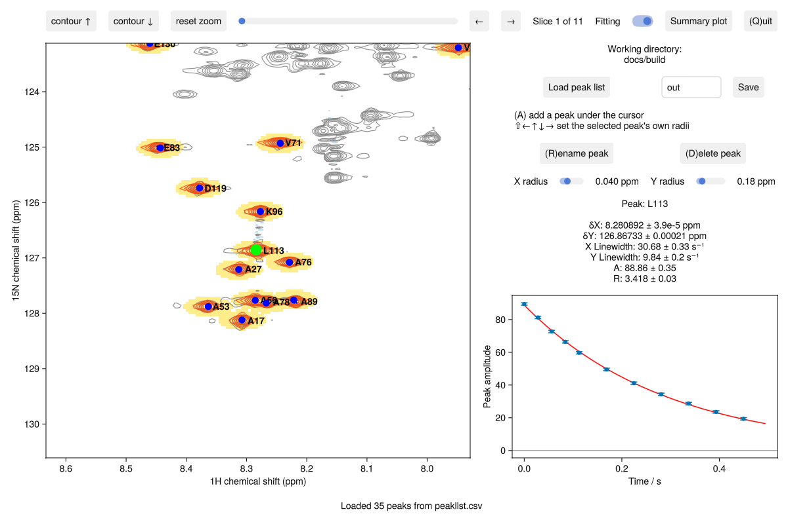
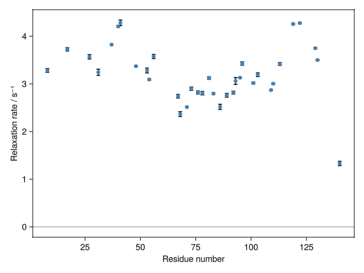
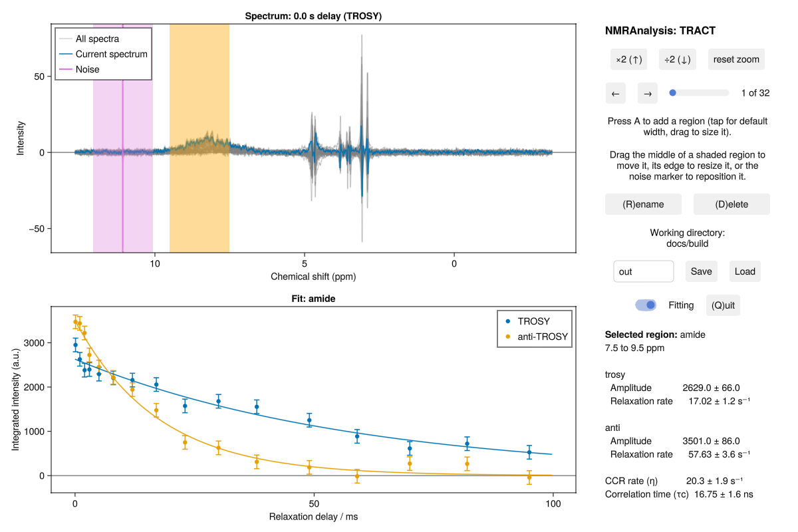

Quick start
Install
Install Julia, then add the package:
julia> ]
pkg> add NMRAnalysisThe first install and load take a few minutes while Julia compiles the package.
Analyse a 2D relaxation series
This example uses a ¹⁵N R₂ series recorded on α-synuclein. example downloads it the first time you use it.
using NMRAnalysis
relaxation2d(example("relaxation2d_asyn"); cycletime=0.02809)The relaxation delays come from the experiment's vclist, multiplied by cycletime, the duration of one loop in seconds. Without cycletime, you're asked for it.
In the window that opens:
- Move the cursor over a peak and press
A. The peak is fitted, and its decay appears on the right. - Press
Rto rename the peak, for exampleL113, so that plots use the residue number. - Add the other peaks you want.
- Press Save.
- Press
Qto close the window.

Save writes the results to the folder named beside it, out by default: results.csv with the fitted rates, summary.pdf plotting them against residue number, and a plot of each peak's fit. The rates for the example begin:
| label | R | A |
|---|---|---|
| L8 | 3.281 ± 0.039 | 36.07 ± 0.19 |
| A17 | 3.725 ± 0.036 | 35.66 ± 0.16 |
| A27 | 3.567 ± 0.047 | 50.56 ± 0.3 |
| G31 | 3.242 ± 0.065 | 31.83 ± 0.28 |
| V37 | 3.823 ± 0.013 | 129.06 ± 0.2 |
| V40 | 4.206 ± 0.017 | 58.96 ± 0.11 |
| … |

reopen("out") opens the analysis again, with its peaks.
Analyse a 1D experiment
1D experiments work in the same way, with integration regions in place of peaks. This example measures the rotational correlation time of calreticulin from a TRACT pair:
trosy, antitrosy = example("tract_calr")
tract(trosy, antitrosy)
Use your own data
Change to the folder holding your experiments, and give experiment numbers:
cd("/path/to/data")
relaxation2d(11)Each function reads what it can from the acquisition parameters and the pulse-sequence annotations, and asks for anything else. Type ?relaxation2d for the options.